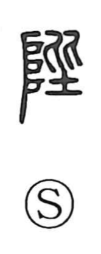

陛

Kun: kizahashi | On: hei
imperial steps ・ palace stairs ・ your majesty
Explanation
陛 is a phono-semantic character: the mound/earthen radical on the left points to steps, while the right component 毕 supplies the sound (hei) and originally depicts two people aligned upon earthen steps. The Shuowen glosses it as “lofty ascending stairs,” referring to the grand stairway leading up to the palace or mausoleum hall. From this image comes the honorific 陛下, “Your Majesty,” a deferential circumlocution that evokes an audience conducted from below the palace steps, rather than naming the sovereign directly.